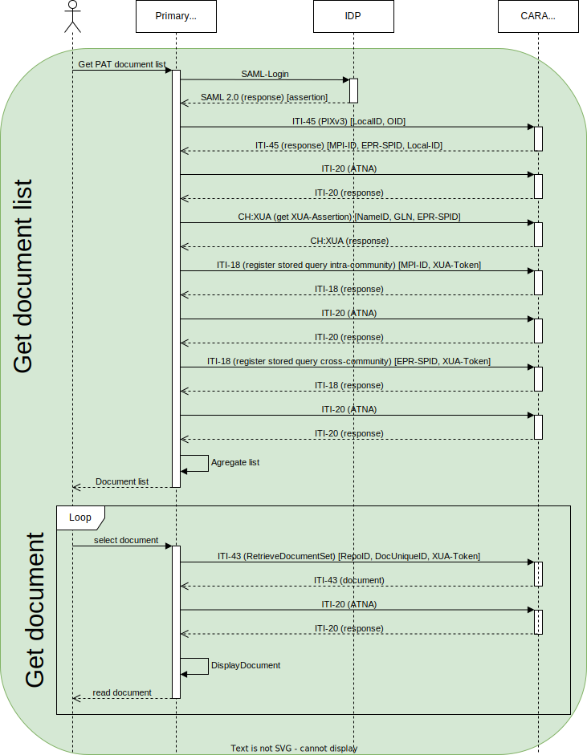

EPR Primary System Integration
For a deep EPR integration into a primary systems the following usecases should be covered
- Integrate the strong authentication into the primary system with an IdP (Level 1)
- Search for patients in the community (Level 2.1)
- Register a patient from the primary system in the community (Level 2.1)
- Query and retrieve documents for a patient from the EPR including authorization (Level 2.2)
- Publish documents for a patient by a healthcare professional (Level 2.2)
- Providing AuditEvents (Level 2.1)
- Query and update the Healthcare Professional Directory (HPD) (Level 2.3)
- OID configuration
The levels of integration are described by eHealth Suisse, see checklist [fr] and [de].
eHealth Suisse has described the different steps with examples [fr], [de].
You find test patients which you can use for publication of documents here.
The healthcare professional portal can be found at https://professional.test.emedo.ch/login.
Please find below additional information relevant for CARA and IKIT:
1. Integrate the strong authentication into the primary system with and IdP
If you have a test user you can use the IdP Assertion from IKIT until you have done the IdP integration yourself.
Note: The NameID has to be currently registered manually on the plattform, please contact us if you want to use strong authentication.
2. Search for patients in the community

This sequence diagram shows the preferred way of managing patient identities. The first case, EPR set in PS is the case where you have already linked your local patient identity to an EPR patient identity and fed your local identifier to the MPI. To get the MPI-PID and the EPR-SPID, you just have to query the MPI with your local identifier (described in section 3.2).
The second case, EPR not set in PS, is the case where you have to reconciliate the patient identities. You can query the MPI for patient demographics (like name, birthdate, gender, etc., described in section 2.2) and manually match demographics. Once that is done, you can feed your patient local identifier to the MPI (described in section 3.1).
2.1 Check if the patient has an EPR based on AHVN13/NAVS
With the PIX V3 query You can use AHVN13/NAVS13 to check if the patient has an EPR (EPR-SPID is returned), and if the patient is already registered in the community (MPI-PID is returned). See example request for patient Larissa Weinmann, which returns EPR-SPID and MPI-PID in the id elements. For a test patient who has no EPR (as of 7.7.2025) with AHVN13 7560739410295 no EPR-SPID and MPI-PID is returned, see request. If the the AHVN13 is not found, an Application Error (AE) will be returned. For a test patient who has an EPR but not in CARA int (as of 7.7.2025) with AHVN13 7560520619845 only EPR-SPID is returned, see request.
2.2 Demographics Query
A search for a patient is done via a demographics query. See detailed description here.
IKIT example request, response. This example search is done on the family name, other demographics query parameters are possible. Please note that Swiss Extension requires that an error is returned if more than 5 matched are returned.
You need to provide creationTime, sender OID and receiver OID in addition to the query parameters in the request. For the communication you need a client certificate but with IKIT a client certificate is not necessary.
3. Register a patient from the primary system in the community and query the patient community id
3.1 Register local patient Id in the community
Register a patient in a community. Primary systems need to use this transaction to register patient data and then to be able to provide and retrieve documents to the patients EPR. See detailed description here.
IKIT example request, response. This example registers the local id from the primary system A001 of the patient identity domain 2.16.756.5.30.1.145 in the MPI. You need to provide creationTime, sender OID and receiver OID in addition to the patient parameters EPR-SPID, MPI-ID) in the request. For the communication you need a client certificate, but with IKIT a client certificate is not necessary.
Danger
Never feed a patient identifier with a domain that is not yours, and especially a domain equal to the configured receiver OID of the platform. It would make the patient unreachable from PDQ queries. The OID (patient assigning authority) needs to be configured first, otherwise it will give an error.
3.2 Query MPI-PID and EPR-SPID based on local ID
The primary systems needs to query the master patient ID (MPI-ID) for patients to retrieve or provide documents for, based on the local id registered above. See detailed description here.
IKIT example request, response.
You see in the response that the patient has the MPI-PID 100001143 in 2.16.756.5.30.1.177.2.2.1.1 .
4. Query and retrieve documents for a patient from the EPR

This sequence diagram shows the search and retrieval of documents. Searching documents in emedo is described in section 4.2a, searching in other communities is described in section 4.2b. Retrieving a document is described in sections 4.3a and 4.3b, depending on the community. The PIXv3 query is shown as a reminder. For these calls, another mandatory step is the Get X-User Assertion call to get a XUA token from the EPR.
4.1 Authorization
To query and retrieve documents the HCP needs to be authorized based on the IdP or TCU token, the patient (resourceID with EPR-SPID), purposeOfUse (NORM, EMER) and role (HCP). See detailed description here.
IKIT example request, response.
Example STS requests with IdP.
4.2a Query documents from the community
Retrieve the document metadata for the documents stored in a patients EPR for the community. See detailed description here.
IKIT example request, response. For the Query the MPI-ID of the patient needs to be added. This example requests includes the security token necessary.
With the IKIT you can do the user authentication there and reuse the token see. For the communication you need a client certificate but with IKIT a client certificate is not necessary.
Note 1: You need to add two namespace prefix to your XDS request if you copy the assertion into your request (add xmlns:xsi="http://www.w3.org/2001/XMLSchema-instance" xmlns:s="http://www.w3.org/2001/XMLSchema" to wsse:Security).
4.2b Query documents from remote communities
To retrieve the document metadata for the documents stored in a patients EPR but registered in remote communities, the initiating gateway has to be called with an IIT-18 query.
IKIT example request, response. Gassmann has also documents in the remote community (cara-ith) urn:oid:urn:oid:2.16.756.5.30.1.191.1.0
See Note 1.
4.3a Retrieve documents from the CARA community
To retrieve documents from a patients EPR the IHE XDS.b profile and transactions needs to be used. See detailed description here.
IKIT example request,response. With IKIT you can do the user authentication there and reuse the token see. For the communication you need a client certificate but with IKIT a client certificate is not necessary. You will need to add the HomeCommunityId, RepositoryUniqueId and DocumentUniqueId.
Note 2: You need to add a start-info to the Content-Type header (e.g: Content-Type: multipart/related; boundary=uuid:f42c35e4-54b2-45ca-8fda-ed58b11f6fce;type="application/xop+xml"; start-info="application/soap+xml; charset=utf-8") as well as check Note 1.
4.3b Retrieve documents from remote communities
To retrieve the documents stored in remote communities, the initiating gateway has to be called with an ITI-43 query with the homeCommunityId added from result 4.2b. IKIT example request, response.
See Note 1 & 2.
5. Publish documents for a patient by a healthcare professional

This sequence diagram shows the publication of a document by a healthcare professional.
To provide documents and metadata about the documents the IHE XDS.b profile and transactions needs to be used. See detailed description here.
IKIT example request,response. With IKIT you can do the user authentication there and reuse the token see. For the communication you need a client certificate but with IKIT a client certificate is not necessary. You will need to add metadata for the document.
confidentiality code in metadata
The patient can set the default level of confidentiality to normally accessible , restricted accessible or secret. This need to be taken into account when publishing (sequence diagram). If a publication fails for normally accessible it has to be retried with restricted accessible. It is only possible to publish a document with confidentiality secret if the user has set the default confidentiality code to secret. To test this three different patients have been setup with different confidentiality codes: GASSMANN-IMHOLZ (normally accessible, EPR-SPID: 761337613645876216), SOARES JESUS (restricted accessible, EPR-SPID 761337616638768604) et Ratchawat (secret: EPR-SPID 761337610888245779)
{kind=link}
| Publication with | normal | restricted | secret |
|---|---|---|---|
| Gassmann (normally accessible) | ok | ok | error |
| SOARES JESUS (restricted accessible) | error | ok | error |
| Ratchawat (secret) | error | error | ok |
metadata in portal
TODO:
The portal displays the metadata provided in the publication. The patient name is only visible if it is provided in PID-5 in sourcePatientInfo. example
The institution can be filtered by the portal only if the authorInstitution contains an OID in the XON.10 field.
provide a document with a technical user (TCU)

This sequence diagram shows the publication of a document by a technical user.
Instead of using an authenticated user for publishing documents, the ERP allows to publish documents with a technical user see factsheet in french. You are required to create a client certificate for this technical user and let it register in the HPD. See the developer platform for exact steps.
IKIT allows you to work with a specific test technical user during integration. You can get the TCU IdP SAML2 assertion from here. This assertion is valid for 10 minutes. With this assertion you can get then the XUA (STS) token for the XDS requests, for the urn:e-health-suisse:principal-id you need to put the GLN to 2012345681729 when using IKIT's technical user EPR INT Emedo Frehner. example
change metadata of existing documents (2.223)
TODO new platform: If a document has been added the metadata can be changed with the IHE Restricted Metadata Update Profile (RMU). See an example message here, where the document title is changed. A new ITI-18 query shows the changed title (Line 312). If you are working with a Technical User you would need to store the DocumentEntry including entryUUID during the provide and register transaction, because you cannot read it with ITI-18.
Replace a document
To replace a document, the same ITI-41 transaction is used as for the publication of a new document, with the
addition of a specific Association element that shows which document is to be replaced:
<rim:Association associationType="urn:ihe:iti:2007:AssociationType:RPLC"
sourceObject="urn:uuid:fa9b4f10-3ea1-436f-a988-ebbb8a2cfffc"
targetObject="urn:uuid:42fbb7ad-fe7a-4585-95c6-15d91a476c40"
id="(a unique id)"/>
TODO new platform: IKIT example request,response.
Using entryUUIDs
Warning
The documents entryUUIDs may change at any time: if the metadata changes (through an ITI-92 transaction, or if the patient changes the confidentiality level), or if the document is replaced, a new entryUUID will be generated.
To change the metadata of a document, or to replace it with a new document, the entryUUID of the currently approved DocumentEntry is required, and may be different from the submitted entryUUID in the original publication. In some cases, it may prove impossible to retrieve the right entryUUID. In those cases, the help from CARA's administrators can be requested, or the document may be republished as a new document.
To retrieve the currently approved entryUUID of a document that has not been replaced, if a healthcare professional is logged in, the ITI-18 search can be used with the document unique ID. If a technical user is logged in, there is no possibility. Depending on the configured confidentiality levels, the document may not be returned in the search.
To retrieve the currently approved entryUUID of a document that has been replaced, the ITI-18 GetRelatedDocuments search can be used to retrieve the document that replaced the original document. A loop may be needed, if the document has been replaced multiple times.
6. Providing AuditEvents
Each IHE Transaction has AuditEvent requirements. This is described for each transaction (see example for ITI-45 here or in eprik). This AuditEvents need to be registered in the community. With EVSClient you can validate if the content of the AuditMessages is correct. See for sending message via syslog protocol also guidance about not using BOM in IHE 3.20.4.1.2 Message Semantics.
The specifications for generating the audit messages are given in the following documents:
- DICOM PS3.15 A.5: the foundation of audit messages.
- IHE profile for each transaction: in the section 'Security Considerations' of each transaction, you'll find IHE requirements.
- EPDV-EDI Annex 5 Complement 1: there are some Swiss requirements too. §1.5.2 describes generic requirements and §1.6.4.3.5.1 describes requirements for transactions that use a SAML assertion (XUA).
EPD-by-example has some examples of audit messages.
7. Query and modify the Healthcare Professional Directory (HPD)
The HPD is an LDAP directory, and interactions with it are wrapped in DSMLv2 objects. It contains three different objects: professionals (ou=HCProfessional), organizations (ou=HCRegulatedOrganization) and relationship between them (ou=Relationship).
7.1 Query entries
With the ITI-58 transaction, you can query the Healthcare Professional Directory (HPD) for the entries you are interested in. You can query entries with LDAP filters on LDAP attributes and select the attributes to return. Example, request.
7.2 Add an entry
With the ITI-59 transaction, you can add an entry to the HPD with an addRequest. [Example]https://ikit.cara.ch/dep/#/transaction/e71b48eb-d65a-4e01-b221-26b5e7c476e2), request.
7.3 Modify an entry
With the ITI-59 transaction, you can update an entry in the HPD with a modifyRequest. Example, request.
7.4 Delete an entry
With the ITI-59 transaction, you can delete an entry from the HPD with a delRequest. Example, request.
8. OID Configuration
TODO
| Parameter | Integration | Production |
|---|---|---|
| MPI OID Patient | 2.16.756.5.30.1.177.2.2.1.1 | 2.16.756.5.30.1.177.2.2.2.1 |
| HL7 v3 Receiver Device ID PIX V3 | 2.16.756.5.30.1.177.2.2.1.1.3 | 2.16.756.5.30.1.177.2.2.2.1.3  |
| HL7 v3 Receiver Device ID PDQ V3 | 2.16.756.5.30.1.177.2.2.1.1.7 | 2.16.756.5.30.1.177.2.2.2.1.7 |
| Repository unique ID | 2.16.756.5.30.1.177.2.2.1.1.2 | 2.16.756.5.30.1.177.2.2.2.1.2 |
| Home Community ID. | 2.16.756.5.30.1.177 | 2.16.756.5.30.1.177 |